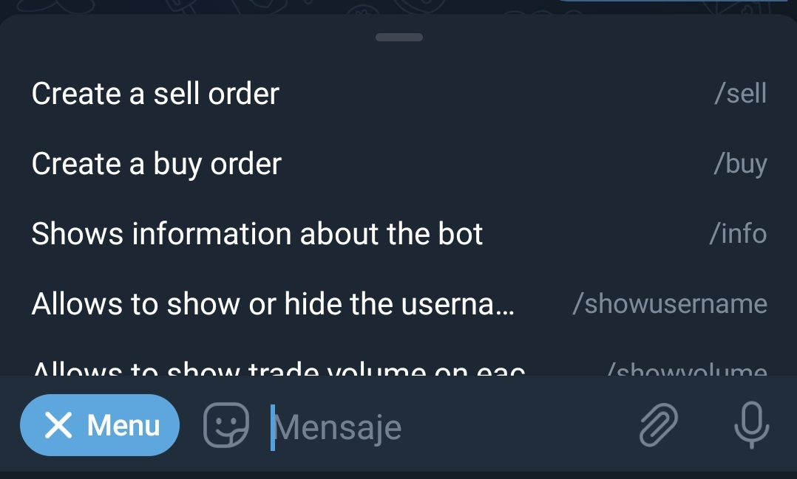
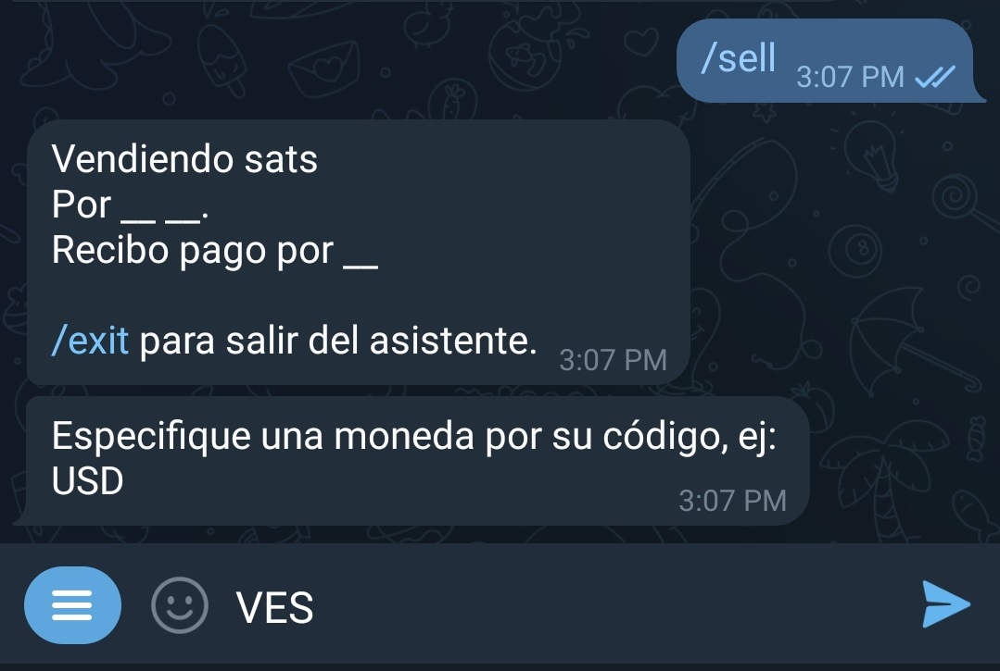
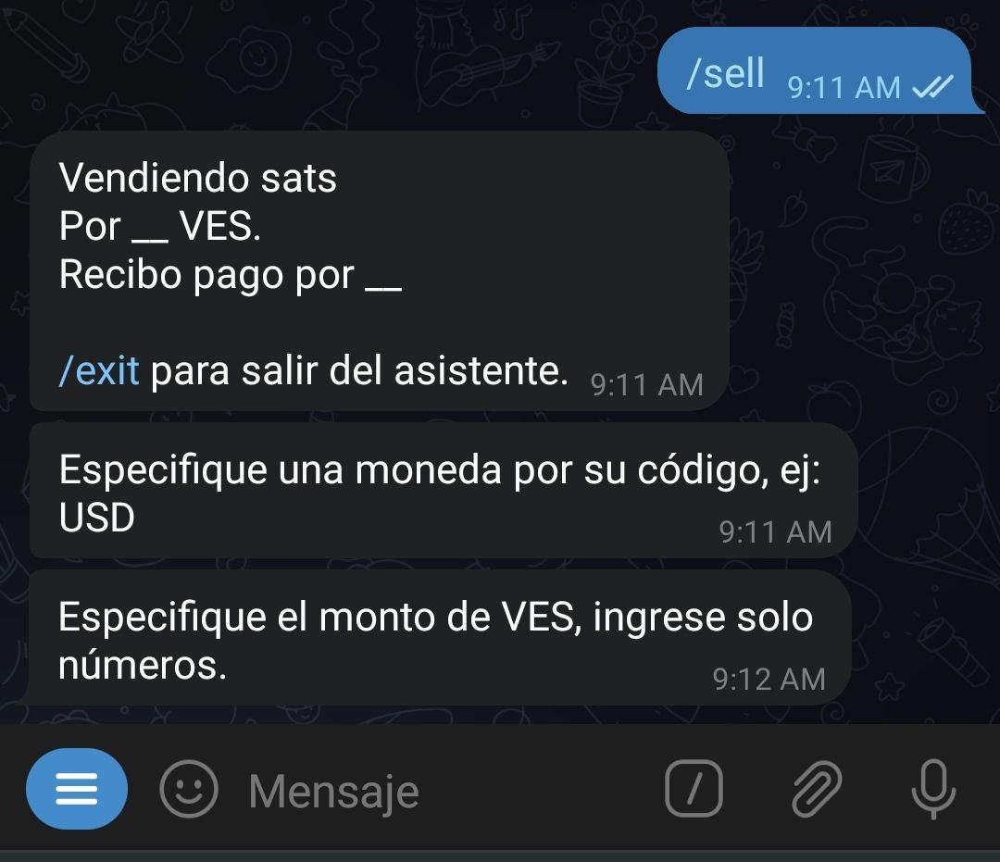
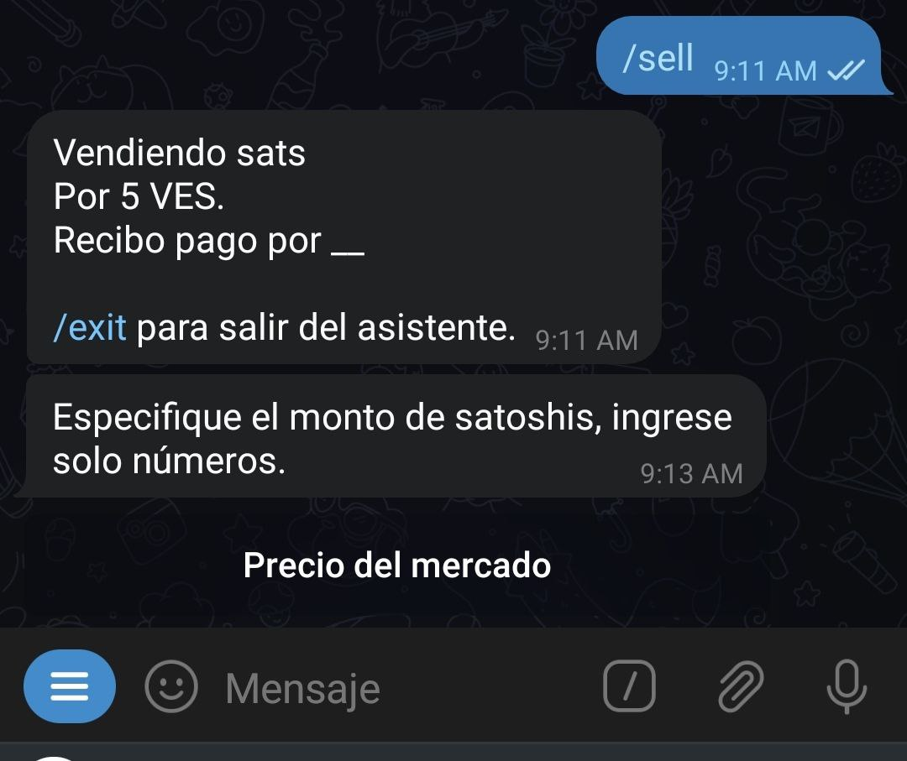
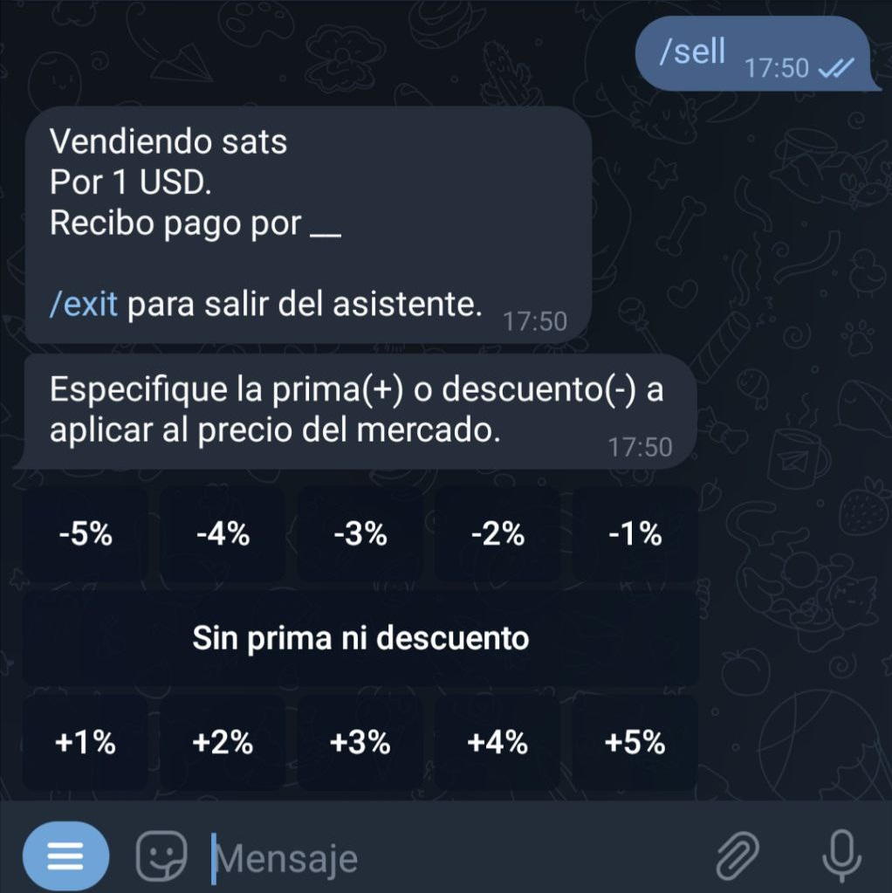
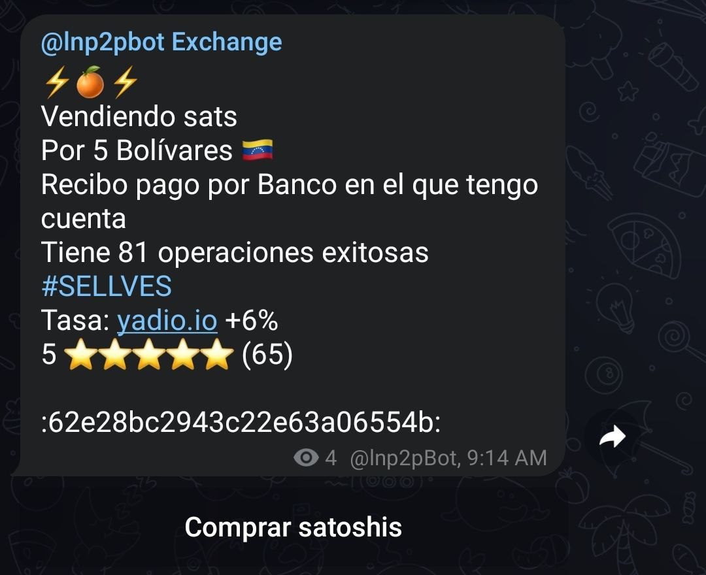
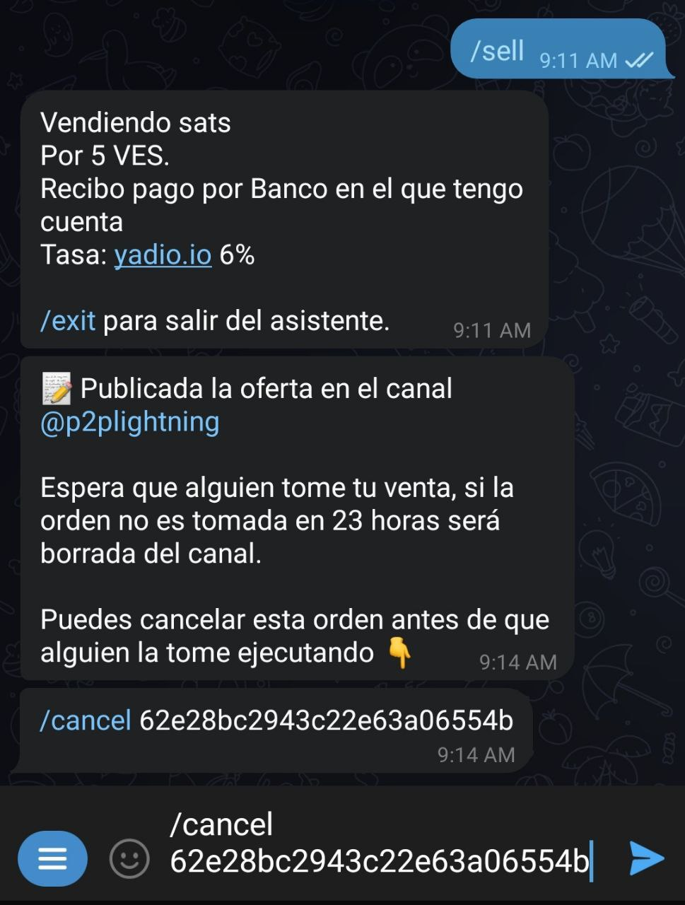
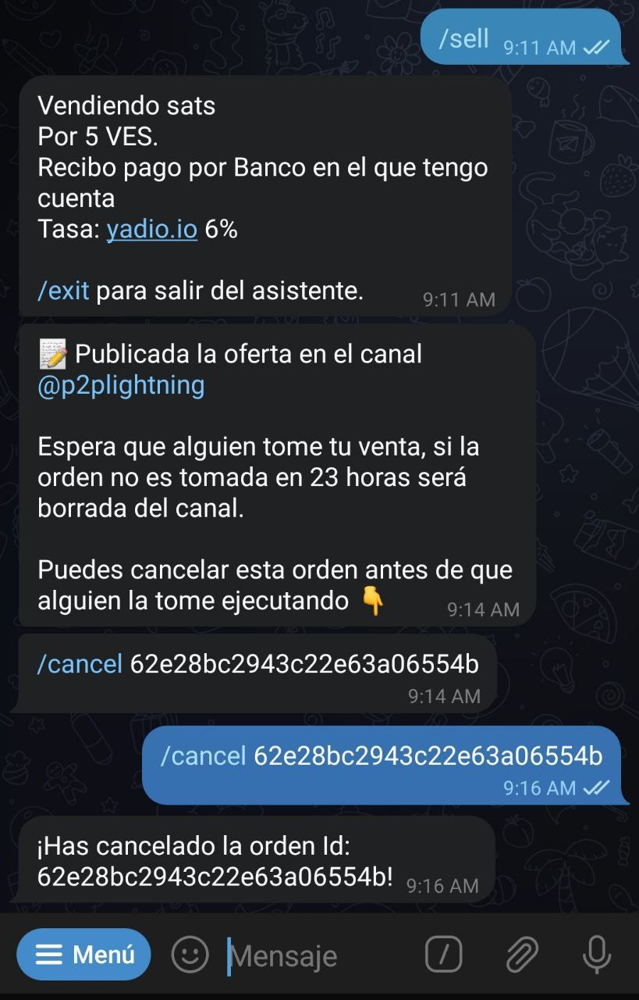

چگونه یک سفارش فروش ثبت کنم؟
هنگام چت کردن با @lnp2pBot یک دکمه "Menu" پیدا خواهید کرد. روی آن کلیک کنید تا لیستی از دستوراتی که میتوانید استفاده کنید نمایش داده شود. دستور sell را انتخاب کنید: sell/ را بزنید تا حالت wizard، که شما را در فرآیند فروش راهنمایی میکند، فعال کنید.

پس از فعال شدن، wizard از شما میخواهد ارز فیاتی که میخواهید با آن معامله کنید را مشخص کنید:

در مرحله بعد باید مبلغی فیاتی را که در ازای ساتوشی میخواهید، وارد کنید. به یاد داشته باشید که در این مرحله فقط اعداد را وارد کنید(نه حروف و کاراکتر) تا wizard بتواند منظور شما را درک کند.
همچنین می توانید با جدا کردن اعداد با خط تیره (-) محدودهای از مقادیر را برای فروش وارد کنید. 
ربات مبلغی را که می خواهید تحویل دهید، به ساتوشی میپرسد. در اینجا شما امکان استفاده از دکمه "قیمت بازار" را دارید. اگر چنین کنید، نرخ یادیو. io اعمال خواهد شد.

در مرحله بعد، wizard درصد تخفیف یا حباب(premium or discount) مورد نظر شما در مبادله را درخواست خواهد کرد. اگر میخواهید سفارشتان با نرخی بالاتر از نرخ لحظهای بازار ثبت شود، premium را که یه عدد مثبت و برحسب درصد است افزایش دهید. اگر میخواهید سفارشتان با فی پایینتر از نرخ لحظهای بازار ثبت شود، discount را که یک عدد منفی و برحسب درصد است کاهش دهید(منفیتر کنید). اگر هیچ کدام را نمیخواهید، از گزینه "No premium or discount" استفاده کنید.

سپس باید روش پرداخت را مشخص کنید. در اینجا، میتوانید خلاقیت به خرج دهید و ایموجیها یا هر چیزی که احساس میکنید پیشنهاد شما را جذاب میکند، اضافه کنید. مثلا اگر قرار است وجه فیات را کارت به کارت کنید میتوانید بنویسید "کارت به کارت" یا اگر دلار نقدی میدهید بنویسید "دلار تحویل تهران". همچنین از تتر، حواله ساتنا، سکه فیزیکی و... نیز میتوانید استفاده کنید.
ربات پیشنهاد شما را در کانال عمومی یا کانالی که به عنوان پیش فرض برای کامیونیتیتان ایجاد شده منتشر میکند. این سفارش حداکثر 23ساعت در کانال خواهد ماند تا اگر کسی مایل بود آن را بردارد و با شما وارد معامله شود.

با استفاده از دستور cancel/ و به دنبال آن وارد کردن شناسه سفارش، هر موقع بخواهید میتوانید پیشنهاد را لغو کنید، مشروط بر اینکه کسی آن را قبول نکرده باشد. این دستور را در چت گروه یا چت شخصیتان با ربات میتوانید وارد کنید.

پس از آن wizard پیامی مبنی بر تایید لغو ارسال میکند و سفارش شما از کانال سفارشات حذف میشود.

در صورتی که سفارش فروش شما برداشته شود، ربات از طرف مقابلتان میخواهد که یک فاکتور لایتنینگی را تحویل دهد.
در همان لحظه از شما میخواهد که فاکتوری را با مبلغ مربوطه(به ساتوشی) بعلاوه 0.6 درصد کارمزد پرداخت کنید. به یاد داشته باشید که شبکه ممکن است مبلغ اضافی را برای مسیر پرداخت از شما دریافت کند. این مقدار به گرههایی(node) که تراکنش شما از طریق آنها انجام میشود و وضعیت شبکه بستگی دارد. ربات دخالتی در تعیین این مقدار ندارد.
در این مرحله، ربات با دادن نام کاربری طرف مقابل به طرفین، هر دو طرف را به هم متصل میکند تا در مورد جزئیات پرداخت صحبت کنند.(باید به پیوی شخص مقابل رفته و با او گفتگو کنید)
هنگامی که ربات پیامی مبنی بر پرداخت مبلغ فیات دریافت کرد، برای بررسی حساب شما یک هشدار برایتان ارسال میکند. پس از آن فورا حساب خود را چک کنید و اگر همه چیز درست بود، ساتوشیها را با دستور 'release/' و سپس شناسه تراکنش آزاد کنید (یا متن را در چت ربات کپی و جایگذاری کنید) تا تراکنش انجام شود.
مبادله تکمیل شد. اکنون میتوانید به همتای خود امتیاز دهید.(بر حسب سرعت عمل در پاسخگویی، طرز برخورد و موارد دیگر) به یاد داشته باشید که امتیاز شما میتواند مبنای تصمیم گیری کاربران دیگر در انتخاب سفارشات آینده شما(و همچنین همتایتان) باشد، پس صادقانه رفتار کنید.
با اجرای دستور exit/ می توانید در هر زمان از wizard خارج شوید.
برای اجرای همان سفارش خرید بدون استفاده از حالت wizard، باید جزئیات سفارش خود را به ترتیب زیر بنویسید:(بدون هیچ کاراکتر اضافهای)
/sell <درصد تخفیف/حباب> <روش پرداخت> <نماد فیات> <مقدار فیات> <تعداد ساتوشی>
نکته: توجه داشته باشید که روش پرداخت باید داخل کوتیشن " " نوشته شود
به مثالهای زیر توجه کنید:
- مثال1: خرید صد هزار ساتوشی به مبلغ $50. پرداخت دلار حضوری تهران:
- "Ex1:
/buy 100000 50 usd "tahvil hozuri tehran - مثال2: خرید پانصد هزار تومان ساتوشی به نرخ لحظهای بازار با پرداخت از طریق کارت به کارت:
- "Ex2:
/buy 0 500000 irt "kart be kart - مثال3: خرید 15-20 میلیون تومان ساتوشی به نرخ لحظهای. پرداخت با حواله ساتنا. در این مثال فروشنده بسته به مقدار ساتوشی ای که میخواهد بفروشد عددی را بین 15-20 میلیون تومان تعیین میکند و ربات سپس به میزان تعین شده از خریدار درخواست فاکتور لایتنینیگی میکند:
- "Ex3:
/buy 0 15000000-20000000 irt "havale Satna - مثال4: خرید مقدار 200 تتر ساتوشی با 3% تخفیف(زیر نرخ لحظهای بازار). در این حالت ربات با دیدن 3- از نرخ بازار 3درصد کم و مبلغ را به فروشنده اعلام میکند. شیوه پرداخت نیز ارسال تتر توسط خریدار میباشد:
- Ex4:
/buy 0 200 usdt "tether" -3
اگر متغیر ناسازگاری وجود داشته باشد، ربات آن را در طول فرآیند ایجاد سفارش نشان داده و خطا میدهد. سفارش پس از تکمیل، به طور خودکار در کانال تبادل منتشر میشود و برای مدت 23 ساعت برای عموم قابل مشاهده خواهد بود.